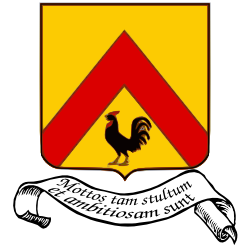

<div class="person">
  <div class="person-picture">
    
    <span class="person-links">
      <a class="icon-twitter" href="https://twitter.com/lalomartins"></a>
      <a class="icon-github" href="https://github.com/lalomartins"></a>
      <a class="icon-cloud" href="http://fnord5.com/people/lalo"></a>
    </span>
  </div>
  <div class="person-info">
    <h4 class="person-name">Lalo Martins</h4>
    <p>
      Geek, writer, game designer, agile enthusiast, ScrumMaster, web developer, steampunk.
    </p>
  </div>
</div>
